General info on pets in MasterworkDF:
- All creatures can be milked twice as often as in vanilla.
- All poisonous/venomous creatures can be milked for their poison/venom.
- Many creatures give fleece when sheared, giving 3 units of cloth after spinning.
- Many creatures give pelts when butchered, giving furs after tanning.
- All animals give leather relative of their size. A cat gives 1, a oxen gives 7.
- All animals lay way, way less eggs.
- Grazing animals can be kept indoors and fed, using the Stables.
- Many animals can learn skills (biting, dodging, fighter) in the Warbeast Kennels.
- Many animals can be armored in Iron or Steel in the Warbeast Kennels.
- Changelings are a base-creature for transformations, always have some around.
All in all animal farming makes a lot more sense if is far more powerful than in vanilla DF, but the amount of eggs has been nerfed a lot. You can create many more items and very powerful war-beasts, but less food this way.
This is a list of all domestic pets you can buy at embark. Prices are the embark points needed, the caravan prices depend on demand and broker skill. Your civilization might have access to additional pets, which are dependant on the biome it lives in.
Kobolds and Orcs have their own special pets, more info about these can be found in their respective manuals.
::: 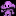 Plump Helmet Man ::: Price: 5, but the real price you pay is higher... :::
A small humanoid resembling a walking mushroom with arms and legs. It is prized for the delicious wine brewed from its meat.
Uses: Food and Drink and Vermin-Hunting and Chaos.
Special: Plump Helmet Men are vicious. Enslaved by the dwarven culture, they nurture hatred and insanity against your fort. Plump Helmet Men are smart and resentful. If you let them outnumber you, they may turn the tables on your dwarves, picking fights with stragglers, covertly murdering civilians in their sleep, even causing themselves to rot with the intention of driving your dwarves insane. Can you keep these mushrooms under control, or will you succumb to the Overgrowth?
*for a spoiler including all the hidden details, scroll all the way down. It might spoil your FUN as well, so do so only if you lose too many forts, or if you stopped having fun.
::: Animated Weapons ::: Price: 51 :::
A floating, animated weapon. You can buy axes, swords, spears and hammers made of iron. Later in the game, your mages might recreate those, forging animated iron, steel or adamantine weapons that defend the fort for you.
Uses: Wartrainable, good for combat.
Special: When butchered, leaves a gemstone and a metal bar, as well as casts/scraps, which are refuse.
:::  Boulder Crab ::: Price: 41 ::: Boulder Crab ::: Price: 41 :::
A large subterranean crustacean that can be found wandering caverns in search of food. It is often domesticated by dwarves and harvested for its delicious meat and useful shellstone. Those that live to a venerable age can grow truly massive in size.
Uses: meat, eggs, carapace (counts as bone), flux stone (when butchered), flux stone as eggs.
Special: When butchered, boulder crabs yield a "shellstone". This is a boulder of flux stone with a light blue color. They also lay special eggs, dolomite, marble or limestone boulders, which are flux as well.
:::  Dewbeetle ::: Price: 26 ::: Dewbeetle ::: Price: 26 :::
A large docile insect that can be found roaming in the less hospitable regions of the world. It is often domesticated to collect the sweet secretions stored in small pods on its abdomen. This honeydew can be brewed into a tasty beverage.
Uses: eggs, chitin (counts as bone), milkable for honeydew (brewable into beetlemead)
Special: Milking dewbeetles produces a unit of honeydew which your dwarves can eat, cook, or brew into mead.
:::  Shaggy Badgerdog ::: Price: 31 ::: Shaggy Badgerdog ::: Price: 31 :::
A medium-sized mammalian carnivore with large digging claws and long striped fur. It is equally at home above or below ground and is renowned for its fierce protective nature. The thick shaggy fur of this creature can be spun into soft yarn.
Uses: shearable fur (yarn) twice/year, trainable for war and hunting, enrages during combat
Special: Badgerdogs are likely to enter into rage in combat, making them much more fierce than normal dogs.
:::  Moleweasel ::: Price: 13 ::: Moleweasel ::: Price: 13 :::
A fuzzy little borrowing mammal with a long sleek body and short, wide legs. It is often kept as a pet for its lovable companionship and to hunt small vermin.
Uses: vermin control (high speed), large litters and fast growth makes for abundant butchering
Special: Moleweasels move twice as fast as normal animals, allowing fewer creatures to hunt vermin over a larger area.
:::  Leatherwing Bat ::: Price: 21 ::: Leatherwing Bat ::: Price: 21 :::
A blind flying mammal that hunts small vermin. Its furry little body is dwarfed by enormous leathery wings. The many folds of skin from these wings can be safely trimmed as a renewable source of leather.
Uses: vermin control, shearable wings 1/season (source for leather)
Special: The wings of these bats can be sheared for skin that your tanners will turn into leather. Leatherwing bats also hunt vermin.
::: 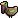 Bearded Cavernkeet ::: Price: 19 :::
A small flightless bird adapted to life climbing and scrabling underground. Its short feathers closely resemble silky colored hairs, with a thick tuft beneath its chin forming a very dwarfy beard. This beard is prized by dwarves as a source of wool.
Uses: eggs, shearable beards (yarn) once/year
Special: The beard hair of these birds can be sheared once a year for beardwool, a source of yarn. Beardwool is worth triple the normal value of yarn.
::: 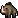 Cragtooth Boar ::: Price: 51 :::
A medium-sized foraging beast native to shallow caves and burrows. It possesses a large snout and long tusks which it uses to dig and furrow through the earth. The tusks of these creatures continuously grow to compensate for the wear of usage and can be sheared as a source of ivory.
Uses: milk (cheese), trainable for war, shearable tusks every couple months (tooth/bone)
Special: Cragtooths tusks are worth twice the normal value of ivory/bone and be sheared as a newable source of these materials.
:::  Woolly Mountain Goat ::: Price: 51 ::: Woolly Mountain Goat ::: Price: 51 :::
A large shaggy herbivore native to the high mountains. It is able to easily navigate steep slopes and narrow ledges in spite of its larger size and hooved feet. Bigger and sturdier than its smaller goat cousins, this creature is often raised by dwarves for its abundant wool and milk.
Uses: milk (cheese), caravan animal, shearable wool (yarn) every couple months
Special: Can be sheared much more often than normal creatures.
:::  Horned Caveturtle ::: Price: 31 ::: Horned Caveturtle ::: Price: 31 :::
A large subterranean reptile with a thick shell and prominent horn. Suprisingly docile for their size, these beasts are valued for their meat, eggs, shells and tough scaly hide (which forms a strong sturdy leather)
Uses: eggs, shell, scales tan into leather (higher value and stronger leather)
Special: Large clutches of eggs, and scales tan into scaly hide which is twice as valuable as normal leather, and makes a better armor material.
:::  Mountain Tuskox ::: Price: 91 ::: Mountain Tuskox ::: Price: 91 :::
A stocky mammalian beast with stout legs and a dark curly mane. It possesses small curved horns, short tusks, and thickly padded hooves. These large herbivores can be found browsing on the sparse plants in foothills and lowlands of mountainous country. They are quite strong and resilient if attacked and can gore with their horns.
Uses: meat, milk (cheese) milkable very often, wagon puller
Special: Can be milked much more often than normal creatures.
::: 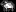 Sheep ::: Price: 51 :::
A medium-sized herding animal. It is prized for its thick wool coat.
Special: Gives fleece when sheared, resulting in 3 units of cloth.
::: Pekyt ::: Price: 101 :::
A squat four-legged moss eater found in the damp caves. They are farmed for their tough leather. Some say they are similar to sheep but with too fragile hair.
Special: When butchered, gives tough skin which is tanned to tough leather.
::: 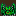 Drake ::: Price: 176 :::
A large reptile-like creature that walks on four legs. Agressive and used as a guard animal. It has very hard scales and can be trained for war.
Special: Can be sheared for rigid scaleplates. When butchered gives ridig scaleplates.
::: 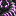 Changeling ::: Price: 58 female/20 male :::
A small harmless creature with a gelatinous composition. It moves slowly along the ground and eats moss. Changelings have developed a unique survival mechanism, they can transform themselves into any creature. Some say that they can be trained to transform at will. Great care has to be taken when doing so, since the changeling will adapt the traits of the new creature. If one would turn it into a wild beast, this beast would no doubt attack.
Special: Males are immobile. Are used in workshops to create new creatures, like enemies in the Colosseum or Magmalings/Waterlings in the Alchemist's Laboratory.
::: 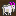 Boozebelly Goat ::: Price: 41 :::
A horned herbivore that dwells in underground caverns. It possesses a unique physiology that causes its milk to have a high alcohol content. Boozebelly goats typically have reddish fur with purple tails. Females also have purple legs and ears.
Special: Gives boozebelly goat when milked. Its cheese can be fermented into booze.
::: 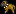 Mastiff ::: Price: 126 :::
A huge dog, heavier than a dwarf. It excels in guarding. Having natural abilities in fighting, they are the best guard dogs you can think of.
Special: Can be armored at the Warbeast Kennels. Has natural skills.
::: 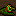 Frill Lizard ::: Price: 11 :::
A small domesticated lizard with a colorful frill on its head. It hunts vermin and helps keep your food safe. It also produces a small amount of eggs.
Special: Hunts vermin.
::: & Ironclad Badgerdog & Cragtooth Boar ::: Price: 61 & 101 :::
A small taste of the animal armoring system. The creatures are the same as the already known pets, but their teeth, claws and tusks are covered in iron, as is their armor-layer. They are quite strong and make perfect early guards, as wildlife rarely bites through metal. Later in the game you can iron/steel-armor a greater selection of creatures.
Special: Attacks are as strong as iron weapons, Skin is as strong as iron armor.
::: 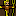 Scarecrow ::: Price: 8 :::
A bundle of straw stuffed into clothing and set in the fields to frighten away unwanted pests. Immobile. Makes good early scouts, bring them at embark and scatter them over the landscape. Also scares away curious critters that would steal from you.
::: 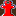 Armok's Ward ::: Price: 51 :::
This ward has the power to unveil the cultmaster of the carp god. Be sure that you want to do this before you use it. A nuisance while hidden, he is rather docile. But if you threaten or corner him, you will have a real fight on your hands. You are warned. Station this ward near the dwarf you suspect and wait for the reaction. It can also cure possessed dwarves that act strangely.
Special: Affects nearby dwarves with an interaction. If the dwarf is possessed, will be cured. If the dwarf is a cult-member, will be unveiled, which turns them hostile.
:::  Genie ::: Price: 626 ::: Genie ::: Price: 626 :::
A mythical being that lives in a magic lamp. It might fulfill your wishes and create matter out of nothing. Make sure that it has access to a (nest-)box to leave the gifts.
Special: Leaves random objects like metals and gems in the nestbox instead of eggs.
::: Landmine ::: Price: 51-501
A mechanical device build by advanced dwarven tech. Immobile. You can order them from the mountainhomes or build them yourself in the Machine Factory. Explode upon death with different effects, fire, ice, warpstone or dust effects. Take care not to station dwarves nearby, as friendly fire is possible.
Special: Explodes into a 10 tile-radius cloud that carries syndromes, if an enemy comes closer than 3 tiles.
::: 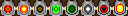 Turrets ::: Price: 2501-6251 (cant be bought at embark) :::
A mechanical device that shoots at invaders. Immobile. You can order them from the mountainhomes or build them yourself in the Machine Factory. Different version shoot different ammo, like bullets, acids, warpstone, webs or fire.
Special: Shoots material emissions at enemies within sight range, even across z-levels. Fire, Acid and Webs have a short range, about 10 tiles, while Bullets and Slade have long range, about 25 tiles.
::: 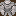 Inactive Golem ::: Price: 7501 (cant be bought at embark) :::
Inactive golems wont move from the spot, but will defend themselves if threatened. A big brass construct provided by the mountainhomes. It resembles a humanoid with thick muscles and broad shoulders made entirely from brass. The eyes glow faintly red. It never speaks or even utters any sound. A valiant defender to guard against the vile forces of darkness.These prototype golems can be pastured and war-trained like pets, but cant be giving direct orders. You can choose between spear, sword or hammergolem. You can also produce your own golems in the Golemforge.
Special: Immobile, but can be brought to the Golemforge to activate them, making them mobile. Even inactive they will fight, but not move by themselves.
Plump Helmet Men

- PHM can have between 1-10 children at a time, averaging 5 per female. If you're not careful, they may attain the majority so fast that you won't be able to bring down their numbers quickly enough.
- PHM will do a headcount of all non-PHM creatures in the immediate area. If they realize that they are the majority, they will rebel. It takes them about 1-2 weeks to figure out that they are the majority. This has no visible effect at first.
- A rebellious phase lasts for 1 week.
- Rebelling PHM will be intimidated by nearby creatures. They will usually not attack unless they outnumber their opponents.
- Rebelling PHM will not be intimidated by unconscious or sleeping creatures.
- Rebelling PHM can sometimes drain blood from sleeping creatures like vampires. This effect lasts for half a year after the rebellion actually starts.
- PHM cannot tell one species from another, but they can tell if the creature had been in a fight within the last year and did not run away. Creatures who fight can intimidate up to 5 PHM at once, so they will usually not be attacked unless they are greatly outnumbered.
- Once a group of PHM decide to attack, they do so by going berserk. Nearby creatures may be attacked even if they were not the actual target.
- Sometimes rebelling PHM will attack each other.
- Rebellious PHM living for a long time underground have a small chance of inflicting necrosis on themselves. This will generate miasma, causing bad thoughts.
- PHM can pick locks - forbidding doors will not control them.
- Rebellious PHM cannot be contained reliably by a far-off pasture, because they have a small chance of randomly going berserk.
- Trying to contain PHM behind walls to prevent gang attacks is a risky strategy - if they don't see any non-PHM creature for a while, they will rebel entirely and may rush the door the moment it is opened.
- Soldiers will not obey direct orders to kill a rebellious PHM that is now docile. However, they may choose to attack one on their own if it had been seen killing someone (the ones with names are the ones that made a kill).
- Killing rebellious PHM has a chance of starting a loyalty cascade.
- The best way of controlling PHM with limited dwarfpower is to pasture them nearby a major pathway, making sure that they can see all the dwarves that pass by. Large numbers of tame animals can also prevent PHM from rebelling. Separating them into small groups can help prevent attacks during a rebellion, as can the presence of guards that have been in combat. Or you could go the simplest method: just eat them!
|